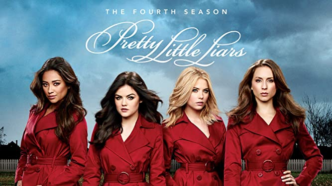
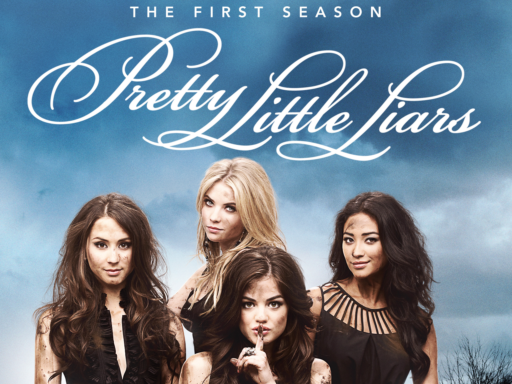
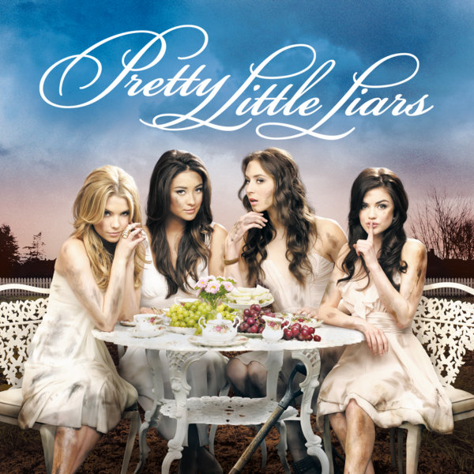
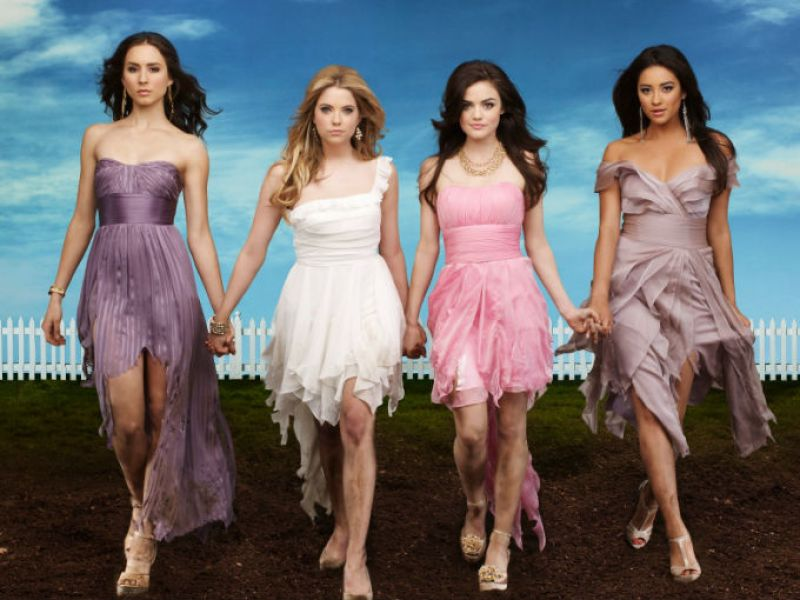
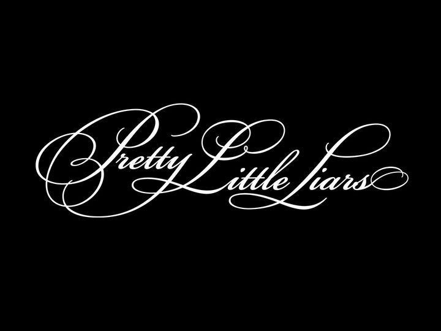

Es una serie de television de drama adolescente desarrolada por I. Marlene King que se basa libremente en la novela homonima de Sara Shepard. La serie sigue la vida de cuatro chicas y muy amigas de secundaria cuya amistad se demorona despues de la desaparicion de su lider. Un año despues, las amigas separadas se reunen cuando comienzan a recibir mensajes de una misteriosa figura llamada "-A" que amenaza con exponer con exponer sus secretos mas personales.
TEMPORADAS
Cuatro chicas de 16 años, Aria, Hanna, Spencer y Emily se han visto sacudidas con la desaparición y posterior muerte de Alison; una de sus amigas y la líder del grupo conocida como "Abeja Reina". Tras estar un año separadas, el grupo se vuelve a reunir en el funeral de su amiga

Con el cuerpo de Ian Thomas desaparecido; Aria, Spencer, Hanna y Emily son tachadas como mentirosas por los medios de comunicación y la policía. Todas son enviadas a terapía con la Dra. Anne Sullivan, que después de varias sesiones con ellas, sugiere que las chicas deberían terminar su amistad.

Después de la muerte de Maya y la búsqueda de la tumba de Alison vacía, Emily continúa luchando con su pérdida durante su último año. Ella está más motivada que nunca para encontrar respuestas sobre el asesino de Alison y todavía apenas esperanza de que Maya podría seguir con vida.

Para muchos televidentes que comenzaron a ver esta serie de misterio, fue una adicción pasar de episodio a episodio solo para conocer qué sucedía después. Lo cierto es que cada final deja un cliffhanger con el motivo de que no dejes de obsesionarte con la trama que envuelve a Spencer Hastings, Emily Fields, Hanna Marin y Aria Montgomery, las cuatro jóvenes que son acosadas por un individuo anónimo que se hace llamar “A”. La serie esta disponible en HBO Max.

ENCUESTAS